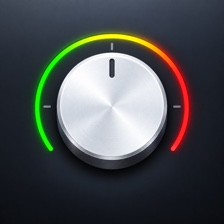

Bypass
Cut the highs or lows
Turn left for a low-pass that rolls the music down to 115 Hz, right for a high-pass that thins it out, and center for the original sound. The filter glides smoothly from one setting to the next.

A little DJ filter for your Mac’s menu bar.
Turn the knob to cut the highs or lows of the apps you choose.
A scripted demo of Twiddle’s menu bar panel filtering an original music loop: turning the knob, the ⌥F10 to ⌥F12 shortcuts, auto-apply while dictating, the reverb, pitch and tape stop effects, and disco mode. Turn on sound to hear it.
Drag up or down, scroll, or use the arrow keys to adjust. Hold Shift for finer control. Double-click or press 0 to reset.Turn left for a low-pass that rolls the music down to 115 Hz, right for a high-pass that thins it out, and center for the original sound. The filter glides smoothly from one setting to the next.
Drag apps from Finder into Settings. Twiddle filters those and leaves everything else alone, and other apps you choose can hold your preset while they play.
⌥F10 switches between the original sound and your preset from any app, and ⌥F11 and ⌥F12 step the filter down or up. Record a hold shortcut to dip into the preset only while you press it.
Auto-apply holds your preset while Wispr Flow or any app is listening, while a trigger app plays sound, or while macOS say speaks. When they stop, the music eases back.
Open FX for a reverb knob and pitch in semitone steps up to an octave either way. Hold the stop button to wind the music down, then let go to come back in.
Light trackpad haptics mark each tick as you turn. On supported MacBooks, the brushed-metal knob catches the light as you tilt the lid.
Sweep your pointer across the wordmark in Settings to drop the disco ball. Pull it to cycle the colors, including ones from your album art, or swipe over it with two fingers to spin it.
The twiddle command controls the running app from Terminal, scripts or agents, and answers in JSON. It talks over a private local socket and opens no network port.
The function-key shortcuts work from any app. With Accessibility access, you don’t need to hold Fn.
Free, for Apple Silicon Macs running macOS 26 or later. Signed with Developer ID and notarized by Apple.
Open the DMG and launch Twiddle from Applications, Spotlight or Raycast.
Choose Allow under System Audio, then Start Twiddle. No audio is saved or uploaded.
Click the knob in the menu bar, pick your apps, and twiddle. Updates install from inside the app.